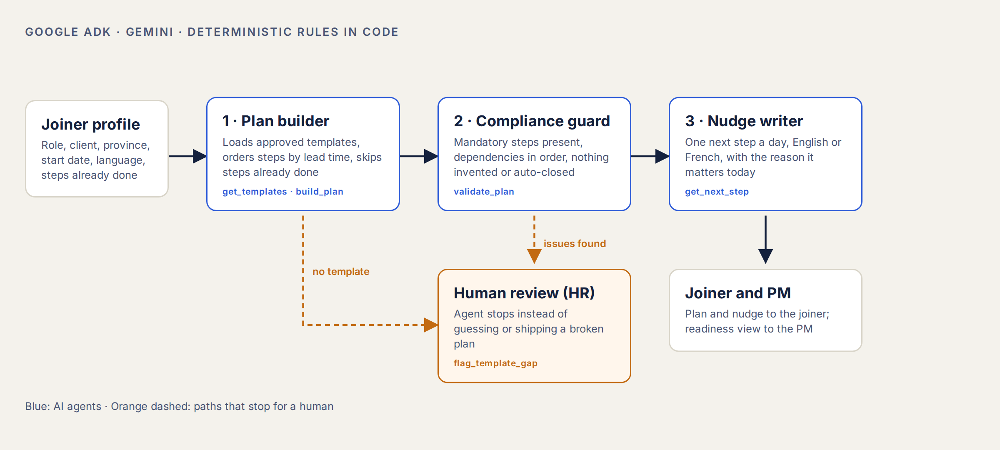
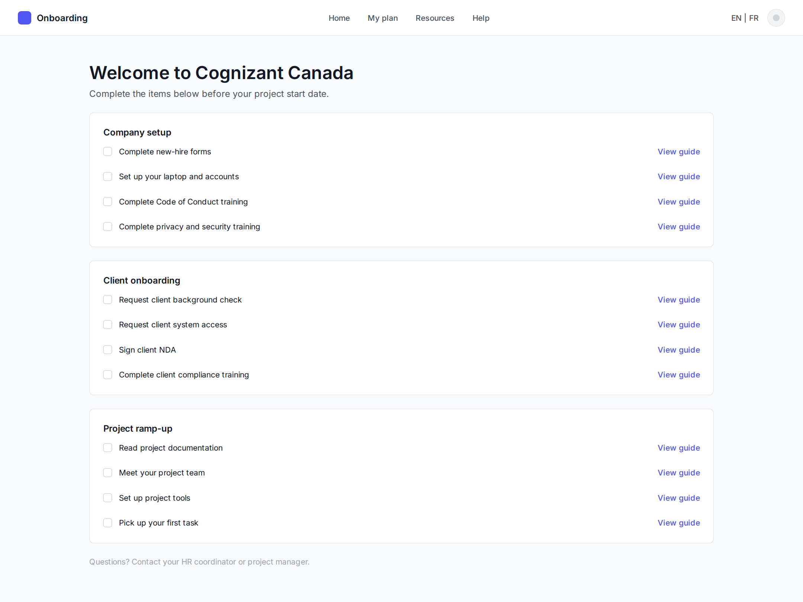
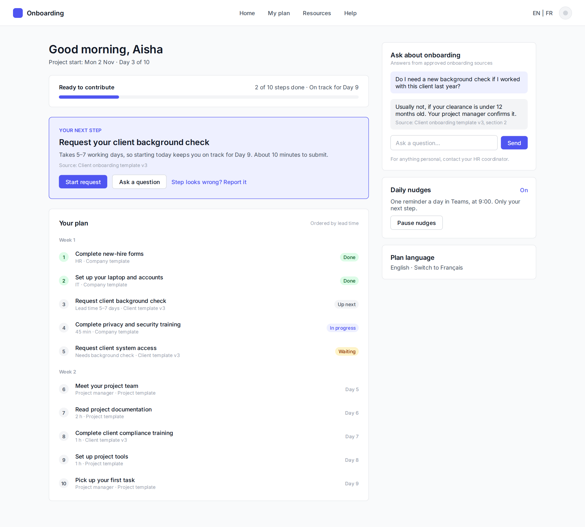
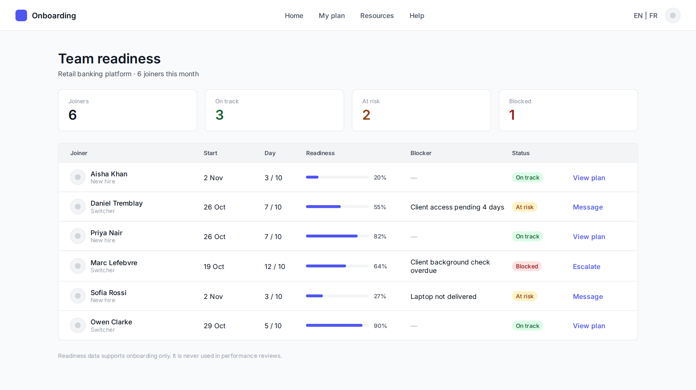
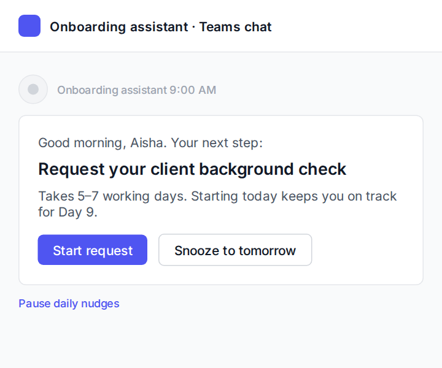

How I worked
Six steps over two weeks. Experimentation is the core skill here: the decision rests on an A/B test, not on model accuracy.
- DiscoverPersonas, journey, hypotheses
- DefinePRD, activation metric
- ExperimentHypothesis, sample size, stop rules
- DesignControl vs treatment in Figma
- BuildMulti-agent prototype on Google ADK
- Evaluate10 joiners, 31 seeded errors
The problem
Onboarding is split across HR, IT, mandatory training, client clearances and project ramp-up, with no single owner.
For joiners
They don’t know what to do next. Access requests queue in the wrong order, so a 7-day client background check often starts on day 4.
For project managers
They answer the same questions for every joiner, an estimated 6 hours each, and can’t see who is ready to take a task.
For the business
Every idle day is a consultant on the bench. At about 40 joiners a month, three days saved per joiner is roughly 1,400 working days a year.
Who it’s for
Aisha, new-hire consultant
Joins in Toronto, first project in week 2.
Wants to be useful fast. Loses time waiting on access and working out the order of steps.
Daniel, project switcher
Senior associate rolling onto a bank client in Montréal.
Repeats setup on every project. Needs client clearances and French-language documents quickly.
Mei, project manager
Runs a 12-person delivery team.
Wants joiners billable in week 1. Has no view of who is blocked and why.
What I set out to test
The current journey has five stages and nobody tracks readiness. My hypotheses, each with a planned check:
| Hypothesis | How it gets checked |
|---|---|
| Over half the delay is waiting on access and clearances that could start earlier | Joiner interviews and past onboarding records |
| Joiners lose time because they don’t know the next step, not because steps are hard | Interviews: “How did you know what to do next?” |
| PMs spend about 6 hours per joiner on repeat questions | PM time survey |
| Switchers repeat setup that a reusable profile would remove | Switcher interviews |
Baselines are hypotheses from delivery experience. A five-person interview plan replaces them before the experiment is sized.
How the agent works
Three agents run in order. The rules that must never be wrong, like scheduling and compliance checks, are plain code. The AI decides which tools to call, handles missing templates and writes the explanations and nudges.

Wireframes: control vs treatment
The A/B test compares today’s static checklist with the AI plan. Both were designed in Figma from a small token-based wireframe kit.




Product demo
Open the live prototype to try the full flow yourself. It runs in demo mode by default; add your own Gemini API key in the AI mode menu to have Gemini write the plan summary, answers and nudges.
One session, end to end: HR sets up a joiner, the agents build and check the plan, the joiner acts on it, and the PM sees readiness.
Experiment design
Hypothesis: if joiners get a plan ordered by lead time and one next-step nudge a day, mean time to first contribution falls from 15 to 12 working days, because clearances start earlier and joiners stop waiting to ask.
| Decision | Choice |
|---|---|
| Unit and split | Individual joiner, 50/50, stratified by segment and province |
| Decision metric | Working days to first contribution (log-transformed) |
| Also reported | 10-day activation rate, PM hours, joiner confidence |
| Guardrails | Compliance steps skipped, nudge pause rate, plan errors |
| Power | 5% two-sided, 80% power: 63 per arm, 126 total, about 3 months at 40 joiners a month |
| Ship rule | At least 2 days faster, significant, no guardrail breached |
The call that mattered
The natural north star, the 10-day activation rate, needs 340 joiners and about 8.5 months to detect 35% → 50%. Days to first contribution answers the same question in 3. I kept activation as a reported metric and powered the test on the faster one.
Building it
Why agentic, not a workflow
A fixed workflow can’t handle a client with no template. The plan builder chooses the path: build the plan, or stop and flag HR. The guard checks every plan before a joiner sees it.
Why rules in code
Mandatory steps, dependency order and “never close a compliance step” can’t be left to a model. They live in plain Python the agents call as tools, so they’re testable without the AI.
Stack
- Google ADK with Gemini, three agents and five tools
- Synthetic templates for two clients and a Quebec addendum
- Streamlit demo with an agent trace
Evaluation
Measured on 10 synthetic joiners covering new hires, switchers, Quebec and two clients with no template.
Seeded errors: a dropped mandatory step, steps out of order, an invented step, and a compliance step marked done by the agent. These results cover the deterministic layer; the full Gemini run is scored with run_eval.py --live.
What the eval found
New hires on the Northbank client can’t be ready before Day 13: the client background check alone takes 7 days. No model fixes that. The product fix is to start client clearance before day one, which became a new requirement.
Business case
Three scenarios, every assumption stated. Value is consultant and PM capacity freed, not cash.
| Low | Base | High | |
|---|---|---|---|
| Days saved per joiner | 1 | 3 | 5 |
| PM hours saved per joiner | 1 | 3 | 4 |
| Adoption | 50% | 80% | 100% |
| Year-1 value | $179K | $861K | $1.74M |
| Return on $180K | 1.0× | 4.8× | 9.7× |
Assumptions: 480 joiners a year, 7.5-hour day, $85/h consultant and $110/h manager cost, $180K year-1 build and run cost.
What I learned
Pick the metric you can afford to measure
The best metric is useless if the test takes most of a year. Powering on a continuous metric cut it to 3 months.
Agents need a place to stop
The most valuable behaviour is refusing to guess. The template-gap path is what makes the agent safe to trust.
Evals find product problems
The Day 13 finding came from the eval, not from research. It turned a model question into a process change.